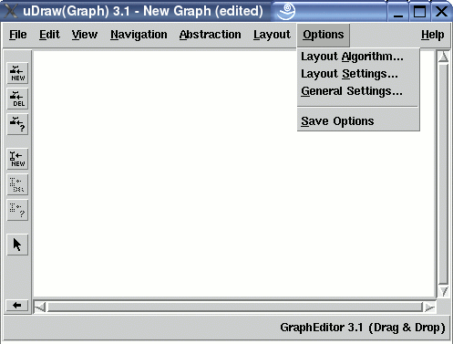

Manual
Options Menu
The "Options" menu contains operations for controlling the options of the uDraw(Graph) system. There are operations to modify the options and to save them for permanent use.
Note: menu operations can also be invoked without the mouse by using keyboard commands.
Changing the Options
-
Layout Algorithm...
Used to set the options for controlling the graph layout algorithm and the manual fine-tuning. After selecting this menu entry, the layout algorithm dialog window will appear to specify the options. -
Layout Settings...
Used to set the options for controlling the settings and dimensions of a graph layout. After selecting this menu entry, the layout settings dialog window will appear to specify the options. -
General Settings...
Used to set some general options of the uDraw(Graph) system. After selecting this menu entry, the general settings dialog window will appear to specify the options.
Saving the Options
-
Save Options
This operation is used to save the current options to a file for permanent use. uDraw(Graph) will always load this file at start time to restore the preferences of the user. The options are saved in file ".uDrawGraph" in the home directory of the user. Note: do not edit this file by hand! Usually, the format of the option file is changed with each release. So options saved by the current version are ignored by earlier releases, but the current version can read the options saved by earlier releases using a compatibility mode.
Copyright © 2005, Universität Bremen. All rights reserved.